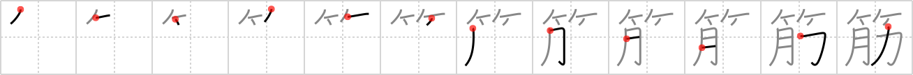

筋
← →
muscle

Reading:
On-Yomi: キン — Kun-Yomi: すじ
Heisig story:
Bamboo . . . part of the body . . . power. Here we see how the primitive meaning of muscle was derived from the kanji for power.
Koohii stories:
1) [fuaburisu] 10-3-2006(202): Muscle is part of the body that gives strength, and can be both supple and tense like the bamboo.
2) [Nukemarine] 28-8-2007(86): Lifting BAMBOO STICKS is an old way for your BODY to put on lots of MUSCLE.
3) [Perry] 12-4-2010(54): If you have enough MUSCLE POWER, you can throw BAMBOO to the MOON.
4) [dshill99] 26-7-2008(38): 肋 is rib (#2463 肋). Over your ribs the muscle (pecs) can flex and bend like bamboo.
5) [chamcham] 6-5-2007(15): Muscle is powerful flesh that bends like bamboo.